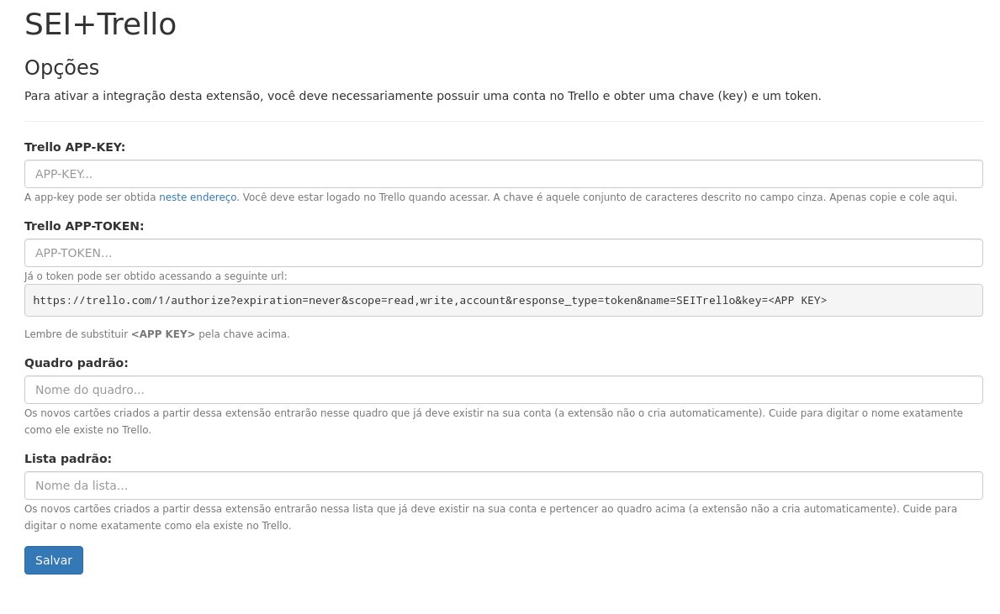
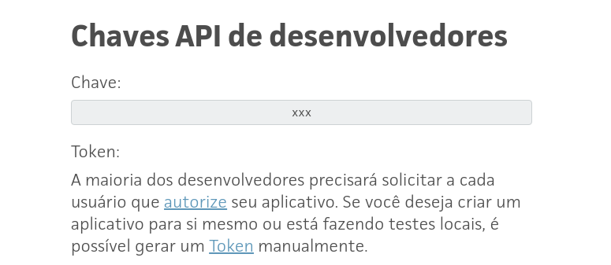

3 Configure a extensão
A extensão precisa se comunicar com sua conta do Trello. Para isso, você precisa inserir nas configurações
da extensão a chave (APP-KEY) e o token (APP-TOKEN) de acesso.

A chave pode ser obtida em
http://trello.com/app-key (você deve estar logado no Trello quando
acessar). A chave é aquele conjunto de caracteres descrito no campo cinza:

Já o token pode ser obtido acessando a seguinte
página:
https://trello.com/1/authorize?expiration=never&scope=read,write,account&response_type=token&name=SEITrello&key=APP-KEY
No endereço acima, substitua APP-KEY pela
chave que você obteve antes.
Insira a chave e o token que
você obteve na página de opções.
Preencha também o Quadro Padrão e a
Lista padrão, que é o local onde a extensão irá criar os novos cartões a partir do SEI.
A extensão não cria automaticamente nem o quadro nem a lista padrão.
Certifique-se de que eles existem na sua conta!